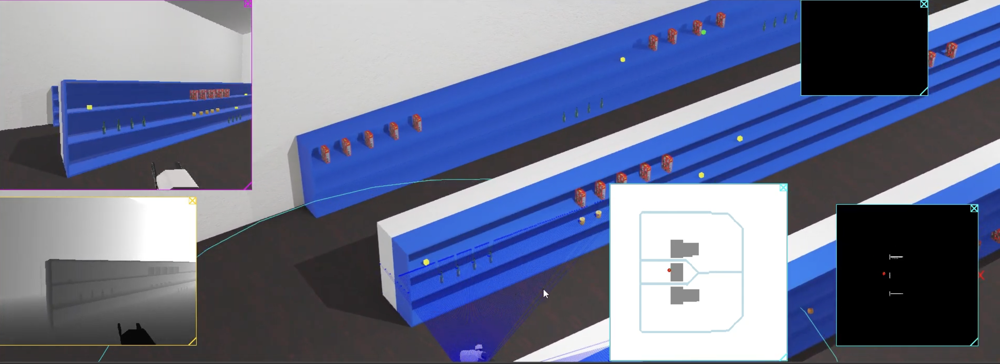
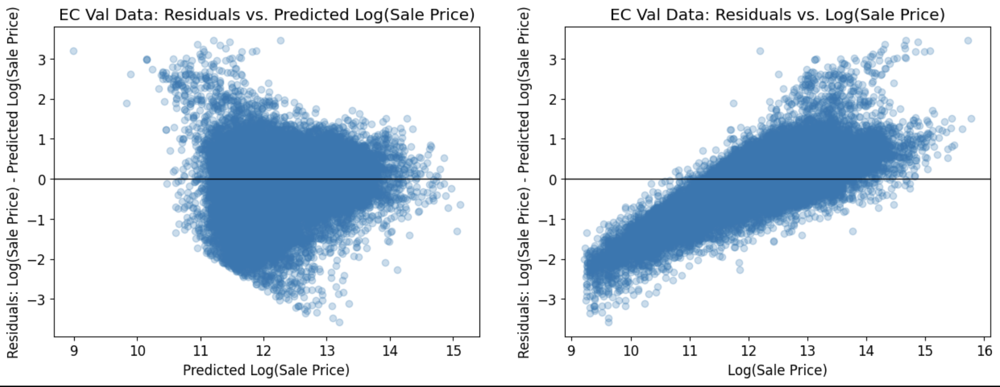
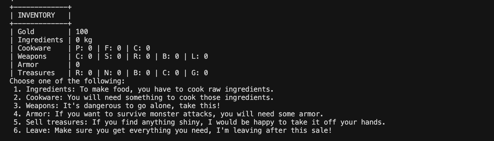

For this project, I developed a Webots robot system that could map its environment, localize itself, detect colored cubes, and use a robotic arm to collect them. I implemented a LiDAR-based probabilistic occupancy grid for mapping, used GPS and compass data for robot localization, and integrated YOLO with FastSAM to detect and segment objects. I also combined depth camera data with the object mask to estimate each cube’s 3D position and transformed those coordinates into the robot’s frame for manipulation. For the arm, I used ikpy inverse kinematics with a URDF model to create a multi-step grasping sequence that aligned with the object, approached it, closed the gripper, lifted it, and released it. Throughout the project, I worked through challenges such as incorrect coordinate conversions, LiDAR detecting the floor, camera calibration issues, and unreliable IK paths by adjusting transformations, tuning sensor offsets, and adding checkpoint waypoints. Overall, I integrated mapping, localization, vision, depth sensing, and manipulation into a working cube-collection system.

For this project, I built and evaluated linear regression models to predict Cook County housing sale prices using Python, pandas, and scikit-learn. I cleaned and explored the housing dataset, checked for invalid sale prices and outliers, and used log transformations to make features like sale price, building square feet, and land square feet easier to model. I started with a baseline model using log building square feet, then improved it by adding roof material and building estimate features, comparing each model with training RMSE, validation RMSE, cross-validation RMSE, and residual plots. I also analyzed whether the model could lead to regressive property taxation by looking at how prediction errors affected lower- and higher-priced homes. For the final model, I added more engineered features such as bedrooms, age, basement finish, land size, and roof material, which lowered the validation RMSE to about $167,290. Overall, I used data cleaning, feature engineering, model evaluation, and fairness analysis to better understand how predictive models can estimate housing prices and how those predictions could impact property tax assessments.

For this project, I built a C++17 text-based dungeon game where a party moves on a 12×12 map with rooms, NPCs, exploration, and an exit, while stats tracks gold, keys, food, cookware, weapons, armor, treasure, and Sorcerer’s Anger (game over at 100), PartyMember models hunger, gear, and death, merchant runs a shop with scaling prices, action loads riddles from a file, and fight handles leveled random monsters and turn-based resolution; the main loop in Driver.cpp drives movement, investigation, optional battles, cooking, equipping, NPC and room interactions, leaderboards, and end conditions so the run plays as one cohesive adventure.